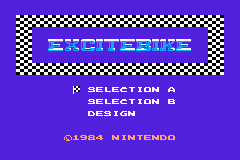
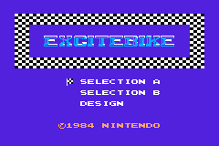

Classic NES Series - Excitebike (USA, Europe)
EEPROM 64K Save Format Spec gbakit Built-In 💾 MultiBoot
Cartridge Identity
- Game Code
FEBE(FamilyFEB)- Header Title
EXCITEBIKE- Maker / Revision
01/ rev0- ROM Size
- 1.0 MiB (1,048,576 B)
- Save Media
EEPROM 64K- SHA-256
6c89e0e30f355a47f7d80985d96c9145e2592b5bb4a92eda3ef27f3124786593
Screenshots


Link Cable & Multiplayer Communications
This title contains detected communication capabilities: 💾 MultiBoot.
Detailed protocol specifications, SIO registers, Joybus commands, and MultiBoot sequences are documented in the Link & Multiplayer Reference.
- Single-Cart MultiBoot
- Single-Cartridge MultiBoot (Download Play) client/server handler · Thumb SWI 0x25 (
0xDF25):0x035424,0x072b74,0x09e0a6,0x0a1f5c
Battery Save Format Specification
Open Full Save Format SpecDownload save-format.json
- Specification Coverage
- 4 mapped fields · 0 verified checksum(s) · Confidence: HIGH
- gbakit Built-In Support
- Built-in (FEBE)
gbakit save verify FEBE save.sav
gbakit save decode FEBE save.sav
gbakit save fix FEBE damaged.sav -o repaired.savObserved Battery Save Layout
- Fill Byte & Active Size
0x00fill · 520–520 / 8,192 B active (entropy 0.16 bits/B)- Active Offset Ranges
0x0–0x1FF,0xFF8–0xFFF(2 total)- ASCII Magic / Headers
IBXEI- Observed Variable Regions
- 0 bytes across 0 spans: None
- Candidate Checksum/Counter Spans
- None
Asset Map (formatkit.asset-map.v1)
Download FEBE-r0-6c89e0e30f355a47.asset-map.json.gz (2,283 B (2.2 KiB)) Verified PASS · 0.15% coverage
| Metric | Bytes / Value | Entries |
|---|---|---|
| Identified | 1,600 B (1.6 KiB) (0.15%) | 15 |
| Mapped | 0 B (0.00%) | 0 |
| Opaque | 0 B (0.00%) | 0 |
| Unknown | 1,046,976 B (1022.4 KiB) (99.85%) | 15 |
| Total ROM Size | 1,048,576 B (1.00 MiB) | 30 |
| Coverage % | 0.15% | — |
| Entries w/ Code Refs | 15 / 30 (50.00%) | — |
Top Identified Formats: gfx.gba-palette (14 · 1,408 B (1.4 KiB)) · gba.rom-header (1 · 192 B)
Largest unknown Extents (Headerless / Custom Asset Candidates)
| Offset | Size | Shannon Entropy | Code Refs |
|---|---|---|---|
0x000800E8 | 524,056 B (511.8 KiB) | 8.000 bits/B | 0 |
0x00002594 | 514,868 B (502.8 KiB) | 7.995 bits/B | 1 |
0x000000C0 | 2,828 B (2.8 KiB) | 6.392 bits/B | 0 |
0x00000C68 | 2,396 B (2.3 KiB) | 5.929 bits/B | 0 |
0x00001BE0 | 908 B | 4.802 bits/B | 0 |
gzip -dk FEBE-r0-6c89e0e30f355a47.asset-map.json.gz && gbakit map verify rom.gba FEBE-r0-6c89e0e30f355a47.asset-map.json
gbakit assets export rom.gba --asset-map FEBE-r0-6c89e0e30f355a47.asset-map.json -o out/Text, Fonts & Scene Data
- Primary Text Encoding
- Compressed / custom-encoded text
- Font & VWF Indicators
- No VWF Table No 1bpp Font · BIOS SWIs: BitUnPack
0x10:9· LZ770x11/12:23· Huffman0x13:11· RLE0x14/15:16 - Scene & Packaging
0ROM pointer tables (≥32 entries,0≥200) ·0relativeu32TOCs ·42OAM metasprite hits
Regional Variants & Revisions (Family FEB)
- Famicom Mini 04 - Excitebike (Japan) (En) (
FEBJ, 1 MiB)